Visualising Data
You can interactively visualise the relationships between the groups and labels once you have imported data or opened a pre-existing data set or project.
To visualise your data, either select the Basedata->View Labels menu option, or double-click on the basedata object under the Outputs tab. Depending upon which data objects you have imported (e.g. BaseData, Matrix, Tree), a maximum of 5 panes are viewable:
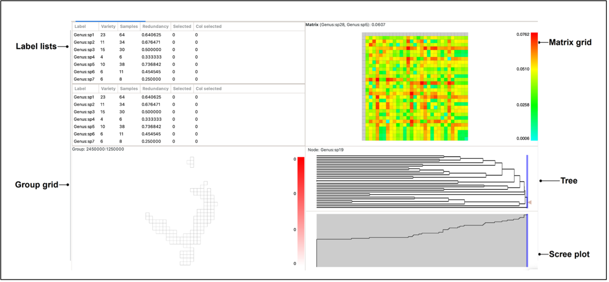
The panes constitute a linked visualisation system so that the selection (labels, groups, matrix cells or tree nodes) in one pane is reflected in the other panes. If more than one label is contained in the selection in any pane, the groups in the group grid are coloured with a hue of red according to the number of the selected labels they contain (dark red for more, lighter red for less, white for none).
Note that the sizes of the panes can be changed by clicking and dragging the dividing bars between them.
We now describe how each pane works.
Label lists
Click on any row in the list to highlight a single label. Hold the shift key down to select a contiguous block, and the control key to select (or deselect) non-contiguous labels. The second list is only visible if the project has a selected matrix. The main use for the second list is to be able to select labels from each list to highlight specific cells – or columns of cells – in the matrix pane, if a matrix is currently selected. The first (top) label list represents matrix rows, while the second (bottom) label list represents matrix columns.
 .
.
Sort the label lists by clicking on the column headers. The default order is by label, in a natural sort order. Re-ordering of these lists also re-orders the matrix plot (the upper list will sort the rows, the lower list will sort the columns). The current selection in the lists is updated whenever you select elements in one of the other panes.
The Variety column shows the number of groups (grid cells) each label occurs in.
The Samples column lists the number of times a label occurs across all groups.
The Redundancy column shows the sample redundancy for each label. This is calculated as (1 – variety/samples). A value close to one represents a good overall sample of a label relative to the number of groups it occurs in (many redundant samples). A value of zero means that there is only one sample per group the label occurs in, and it is therefore not well sampled. The redundancy value can be understood as a measure of data sensitivity (lose one sample, will you lose one unit of range)
The Selected / Col selected columns have a value of 1 when that label is selected, allowing the user to raise the selected set to the top of the list. The Col selected value is 1 only when one selects a matrix column, either through the lower Label List or on the matrix itself.
Group grid
The group grid displays the groups. Normally this is a map of the data (e.g. if your group data consists of some form of geographic coordinates), but there is no reason that you are restricted to using geographic locations for your groups. If your data use text group axes then the system will assign them to cells on a grid based on an alphabetical sorting.
Hovering over a group will highlight in bold the nodes in the Tree corresponding to the labels it contains, if a tree is displayed.
image needed
Left-clicking on a group will highlight it in dark red. If the selected group contains more than one label, the other highlighted groups will range in a red hue, depending on the number of labels they have in common with the selected group (darker red for more shared labels, lighter red for fewer, and white for no labels in common). If the selected group only contains one label, all other highlighted groups will be the same dark red (only one label is common across all).
Labels in selected groups will also be highlighted in the top label list (although the list does not automatically jump to them). Drawing a box over the grid with the left mouse button selects labels from all the groups in the box, allocating the red hue based on the species richness of the selection rather than a single group. Groups outside the box perimeter will be highlighted if they contain the labels within the box selection.
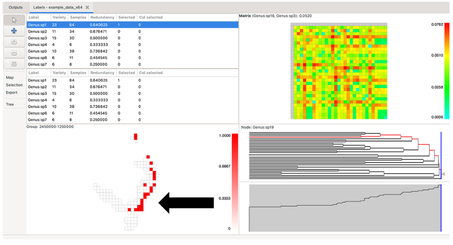  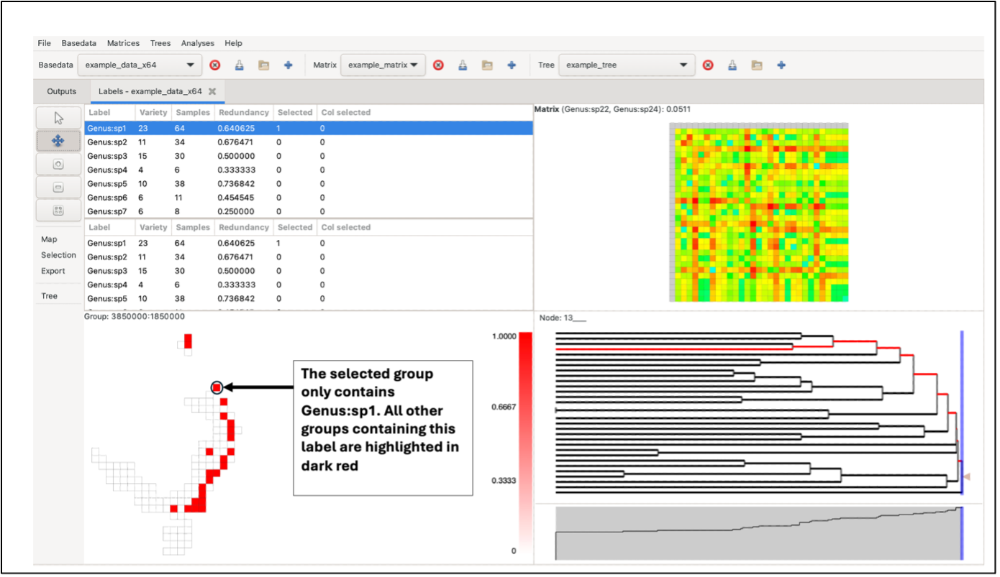
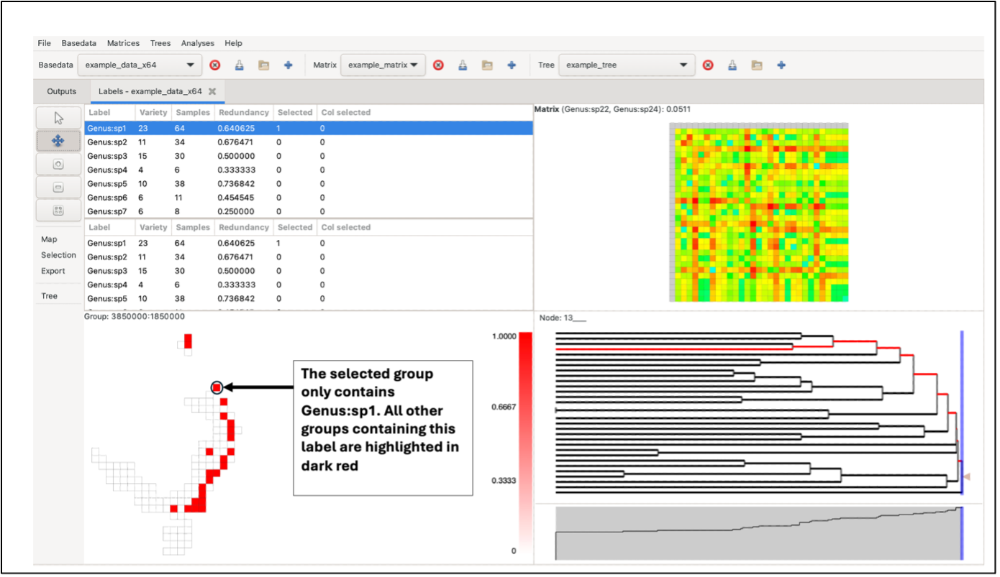
While holding the Control key down, click on a group to display a pop-up window that shows a list of labels it contains and the sample size for each label within that group. To bring up any group’s detailed information without changing the current highlighting, use the middle/wheel mouse button to select a group. Data lists can be directly copied to external programs (e.g. Excel)
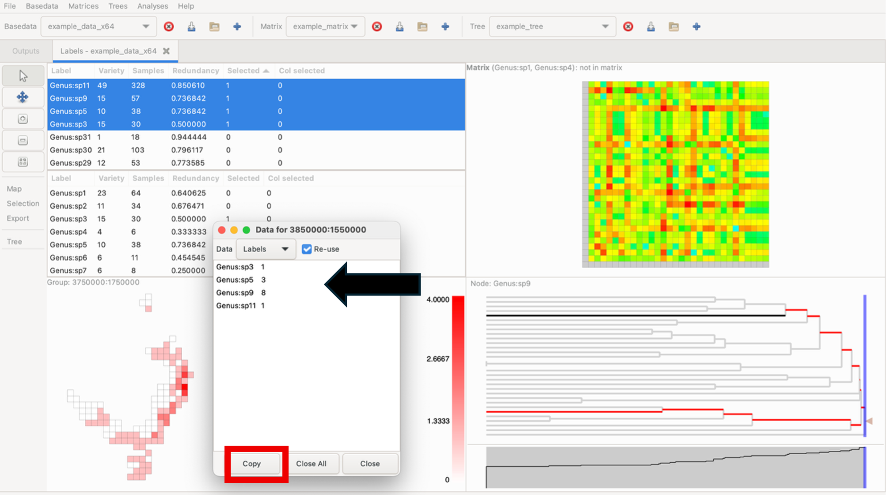
Adjust the Group Grid zoom level using the three zoom buttons on the left sidebar. This includes a Zoom to fit button, which centres the group map when the pane is clicked on. For details about keyboard shortcuts for these functions, see (the relevant blog post)[https://biodiverse-analysis-software.blogspot.com/2014/10/the-pan-and-zoom-functionality-in.html]
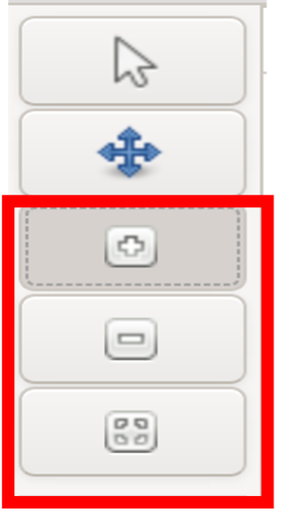
NOTE: Make sure to switch back to the mouse arrow control when selecting elements across all panes. Selections cannot be made on the Group, Matrix of Tree panes when pan control is selected.

Map Overlays
External feature (vector) data can be imported to plot overlays in the Group pane. This can provide more insight into group distribution, especially if they are geographically related. Overlays may include polylines or polygons, for example, national border maps or bioregions.
To plot overlays, select the Overlay button in the Map menu on the left-hand control panel. A list of the currently available overlays will be displayed. To add a new overlay, click Add, and select the desired overlay file (software currently only supports Shapefiles). Note: files must use the same coordinate system as the BaseData.
Select the box next to the file you wish to plot and select whether you want to “plot above cells”. You can edit the line width, opacity and colour of the overlay as well (These elements can be edited after plotting). To plot, click OK. Note: Whilst multiple data sets can be loaded, only one can be displayed. If you wish to plot more than one set of features, they need to be combined into a new data set using a GIS.
To remove the currently displayed overlay, open the Overlays menu and click the Clear button. Note: clicking Delete in the Overlays window will delete one shapefile from the list but will not remove it from the display if it is currently being displayed. You must click Clear as well.
Using an overlay may result in slower display processing (e.g. when highlighting groups), particularly with more detailed shapefiles.
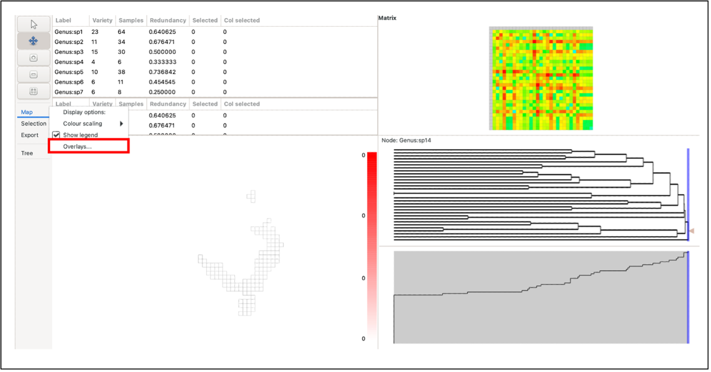  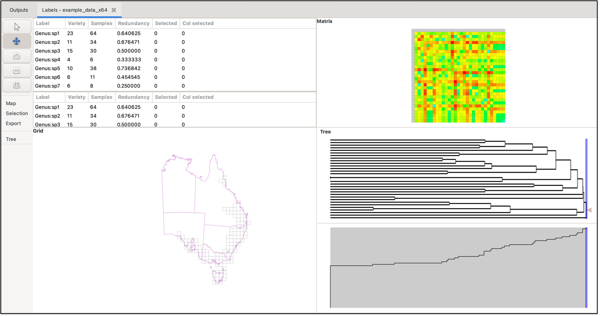
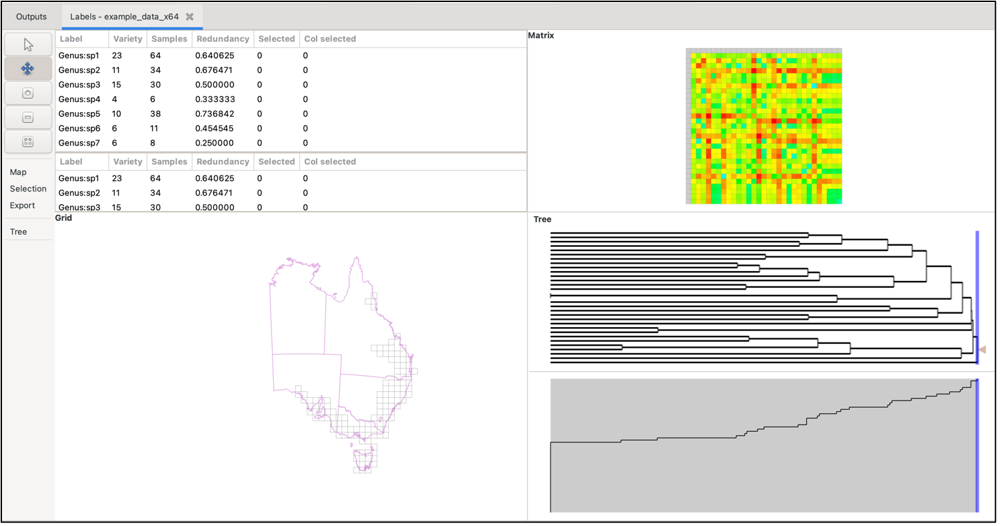
Tree
The tree is generally a representation of the phylogenetic similarities between labels, although it could be used for anything that uses such a structure. In this pane, you should see two sections (assuming a tree object is selected in the main toolbar at the top of the window). The upper section displays the relationship between labels as a dendrogram.
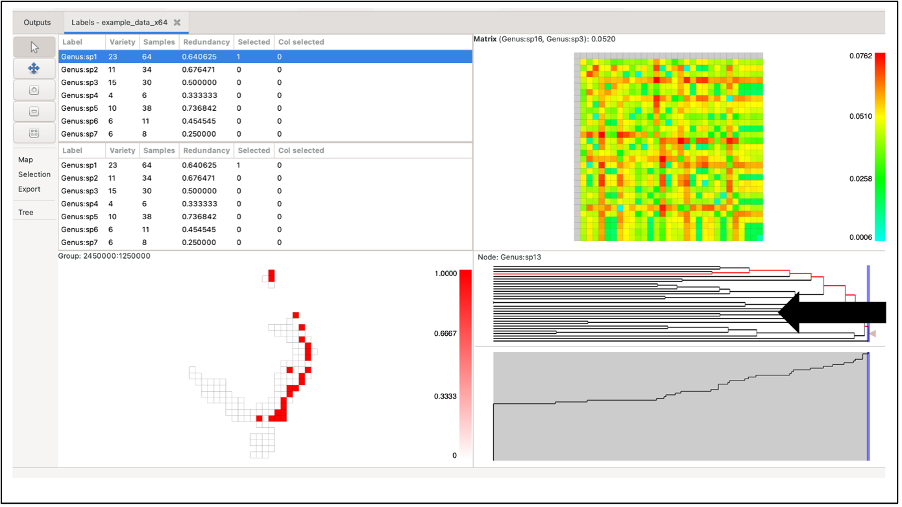
The dendrogram can be plotted by node length or depth via the Tree menu on the left under the zoom/pan panel (and also range weighted variants using the current BaseData). This menu also allows you to adjust the width of tree branches and to change highlighting settings.

Hovering over a tree node highlights the groups containing the node’s labels in the group grid. It does this using a circular symbol. Right-click on the node to fix the highlights until the next mouse click in the tree pane.
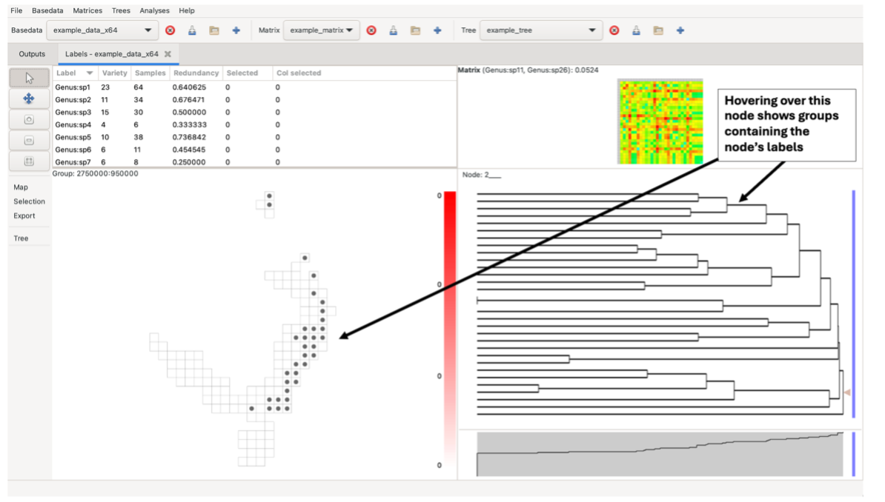
Left-clicking on a branch selects all labels in terminal descendants (common ancestors/single-label nodes) of that node in the tree that are also in the label lists. Any nodes containing a label that is not present in the BaseData will remain black in the tree.
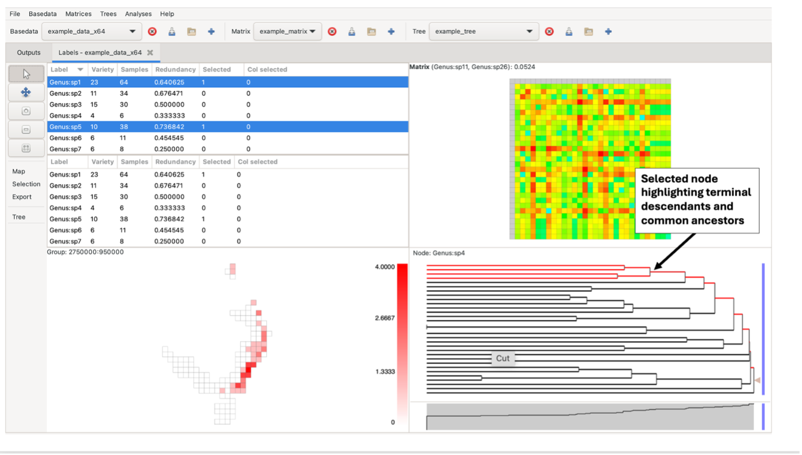
Control-click on a node to display a pop-up window from which you can access lists of the labels, groups and branch characteristics (length, name, etc).

Note the blue vertical sliding bar on the right side of the tree pane. Left-clicking and dragging this bar will display three numbers. The first two numbers indicate the quantity and percentage of nodes present to the right of the bar. If the tree is plotted by node depth, the third number indicates the depth at the current bar position. If the plot is by node length, the third number indicates the distance from the bar position to the most distant (left-most) leaf node (tree terminus).
Scree plot
The scree plot is the pane below the tree. It may be hidden by default, but can be dragged up from the bottom of the tree pane if not visible. This plot displays a simple graph of the proportion of nodes present to the left of an imaginary vertical line cut through the tree above.
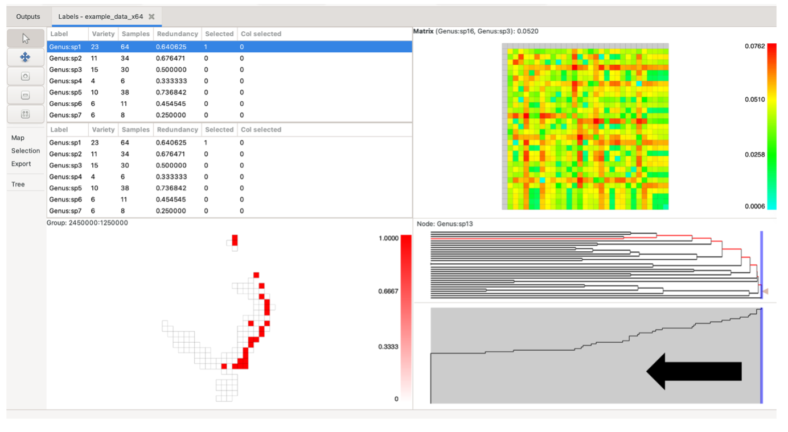
Matrix grid
Each matrix grid cell represents a pair of labels from the label lists, coloured according to the pair’s matrix value, with a colour scale for these values on the right of the matrix. Cells in the matrix grid are only coloured if both labels they represent are present in the BaseData label list. If one or both of its labels are not present in the BaseData, a cell remains white.
The system lists which element you are hovering over at the top of the pane, indicating the label pair and its matrix value.
Click on a single element (cell) to select one pair of labels. The two label lists will automatically adjust to show these two (the top list highlighting the label corresponding to the matrix row, the bottom list highlighting the label corresponding to the matrix column). All cells in the group grid containing those labels will be highlighted in red as per the groups, as will the relevant nodes on the tree.
You can also click and drag the left mouse button to select a rectangular region in the matrix. This highlights the selected labels in the other panes, adjusting the label lists to reflect the new selection.
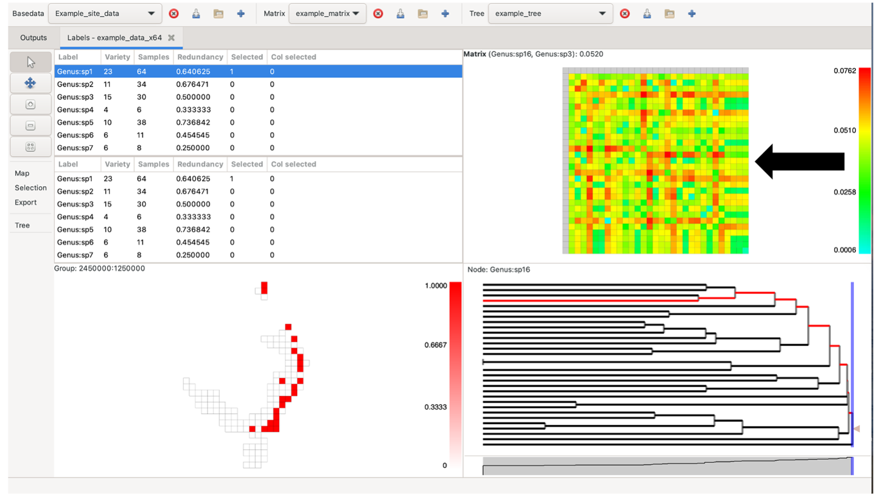